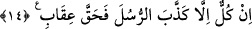
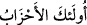
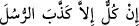

kabilesi de o gruplardan sayılır.
14. Onların her biri gönderilen peygamberleri yalanladılar da bu yüzden
(kendilerine) azâbım hak oldu.
Bu ifâde, mezkûr grupların peşinden gidenleri tehdîd için getirilmiş yeni bir cümle
olup anlamı -‘çoğul’un çoğul’a karşılık olarak zikredilmesi, tekillerin tekillere
bölüştürüldüğüne delildir’ şeklindeki genel kurala göre- şöyledir: Bütün bu hizipler
arasında hiçbir hizip ve cemâat yoktur ki kendi peygamberini yalanlamış olmasın!
“Millet, hayvanlarına bindi” cümlesi de bu kullanıma misaldir.
İstisna, mübtedâ makamında en genel hükümden yapılmış (müferrağ) bir istisnâ olup
mânâsı şöyledir: Bu hiziplerden herhangi biri hakkında ‘bu peygamberini
yalanlamıştır!” hükmü müstesnâ, hiçbir hüküm verilmemiştir.
“İşte bunlar da (peygamberlere karşı) birleşen topluluklardır” anlamına gelen (
) ifâdesinin mübtedâ, “Onların her biri gönderilen peygamberleri
yalanladılar” anlamındaki (
) ifâdesinin de onun âid zamiri
hazfedilmiş haberi olması da mümkündür.
“Bu yüzden (kendilerine) azâbım hak oldu” yâni, benim cezâmı hak ettiler ve kendi
suçlarının gerektirdiği ve yeri geldiğinde genişçe açıklanan çeşitli cezâlar, bunların
herbiri için sübût bulup kesinleşti.
[1]. Aclûnî, II, 514.
[2]. Deylemî, hadis no: 8101.
[3]. Buhârî, “Salât”, 88; Müslim, “Birr”, 65; Tirmizî “Birr” 18; Nesâî, “Zekat”, 67;
Müsned, IV, 104, 405, 409.